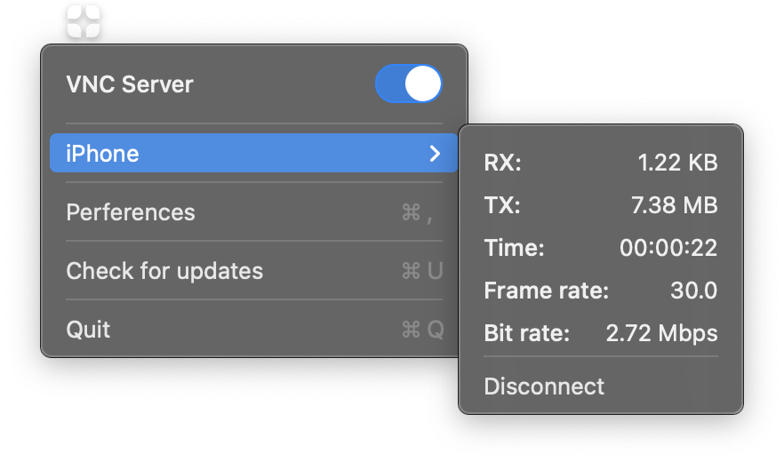
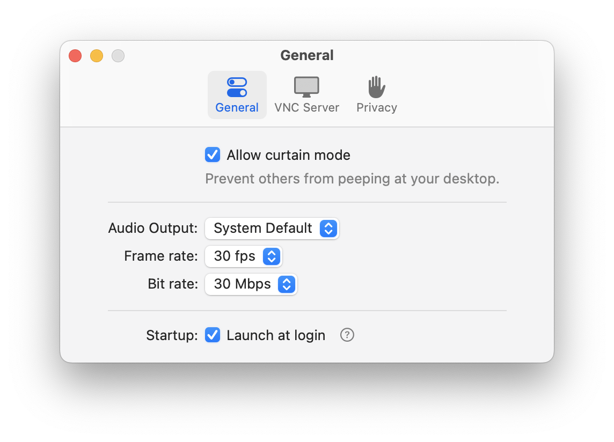
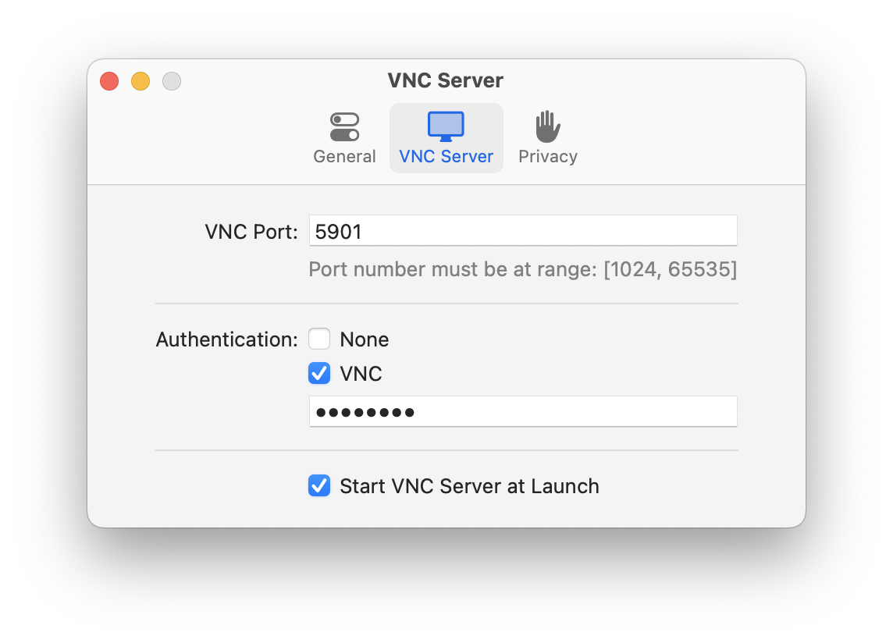
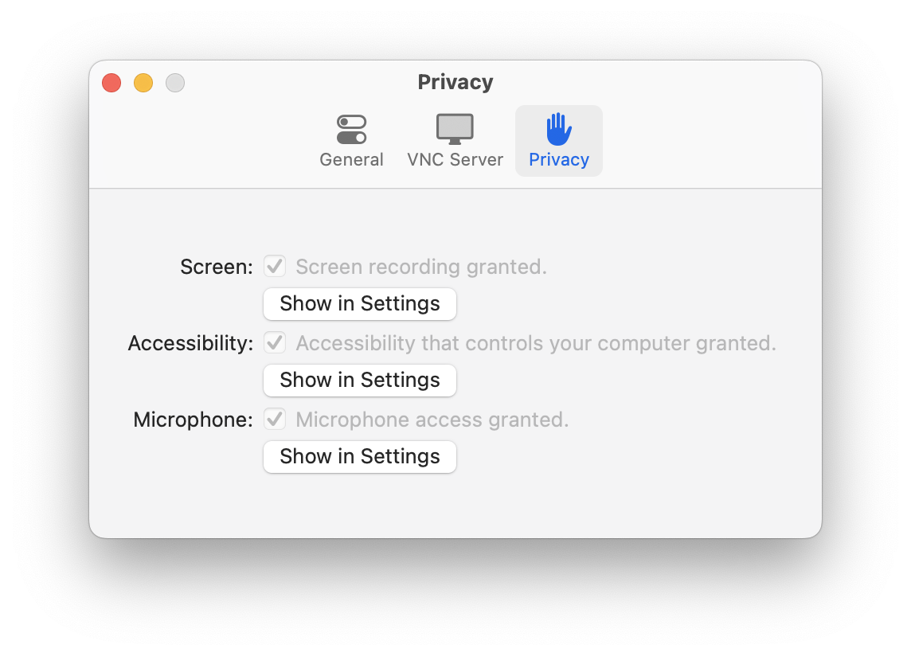
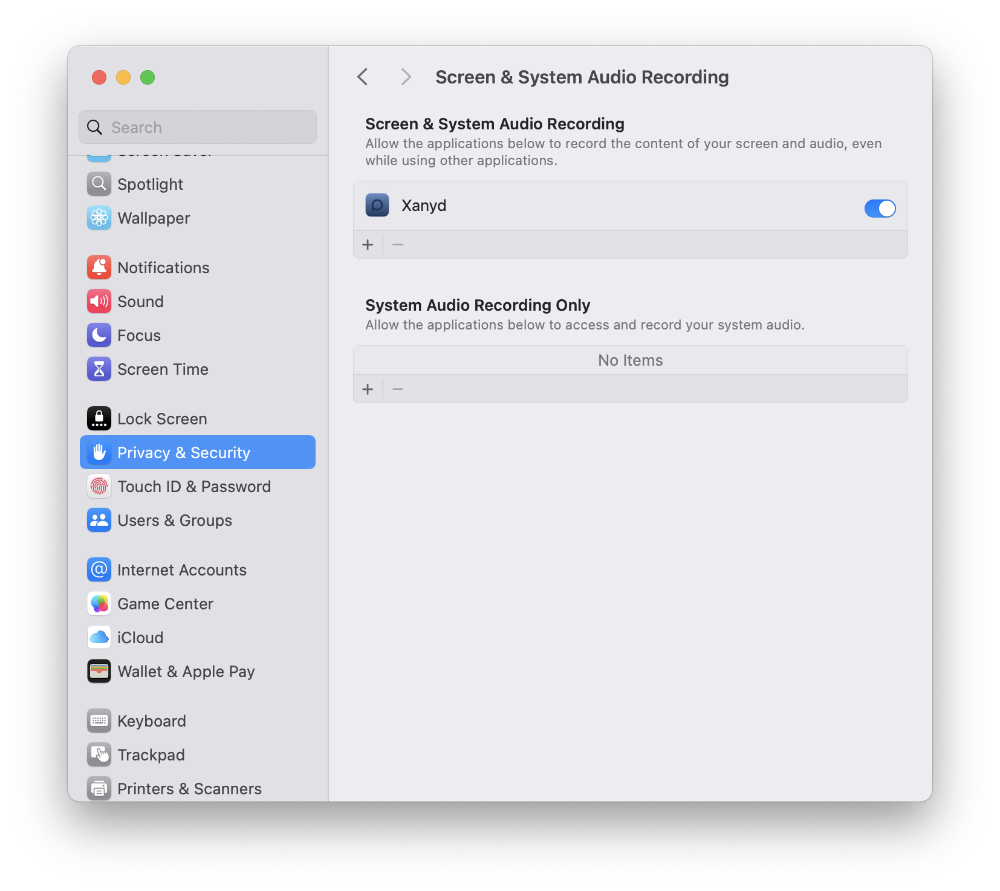
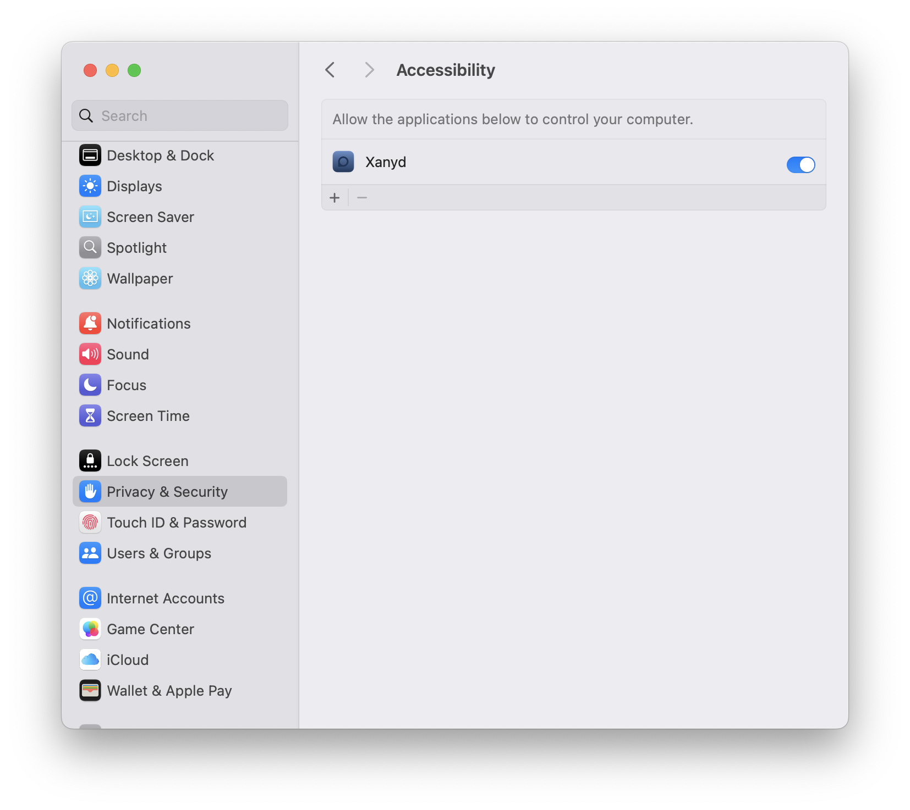

Installation
Download Xanyd from GitHub: Latest Release
Or via brew
brew tap XanyApp/xanyd https://github.com/XanyApp/xanyd
brew install --cask xanyd
Screen shots




Setup
- Move Xanyd to Applications folder
- Open System Preferences > Privacy & Security
- Go to 'Screen & System Audio Recording', drag Xanyd to the 'Screen & System Audio Recording' 
- Go to 'Accessibility', drag Xanyd to the 'Allow the applications below to control your computer' 
Support
Report bugs or Request features at Github
Release Log
v1.6.0
Added support IPv6.
Aug 16, 2025
v1.5.4
Added support paste text to the client.
Jul 17, 2025
v1.5.3
Fix app crashes when selecting the "VNC Server" tab.
Jul 10, 2025
v1.5.2
UI Touch-Up.
Jun 27, 2025
v1.5.1
Fix status icon disappeared in the Menu Bar.
Mar 11, 2025
v1.5
Support LPCM audio streaming and monitor hot-plug.
Mar 04, 2025
v1.4
Show the required permissions in the app's preferences. If they have not been granted, show a prompt to request permission.
Jan 12, 2025
v1.3
App support H.264 video streaming and support check for updates.
Jan 05, 2025
v1.2
Add support copying text from client.
Dec 27, 2024
v1.1
Fix app not responding.
Nov 07, 2024
v1.0
Initial release.
Sep 13, 2024